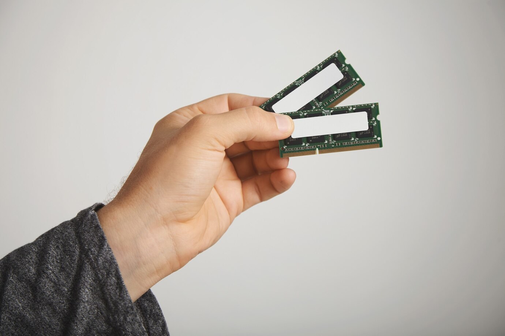
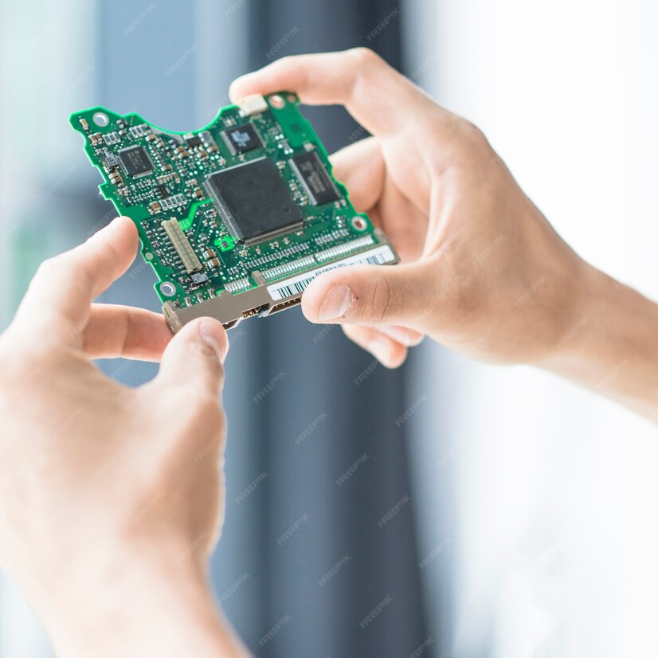

|  |
MEMORIA RAM |
La memoria de acceso aleatorio es una memoria de almacenaje a corto plazo. El sistema operativo de ordenadores u otros dispositivos utiliza la memoria RAM para guardar de forma temporal todos los programas y sus procesos de ejecución. |
$100 |
|  |
PLACA MADRE |
La motherboard se trata de la placa de circuito impreso principal de una computadora, lo que significa que es la pieza principal de los circuitos a la que se conectan las demás piezas que crean el conjunto. |
$200 |
 |
CPU |
Una CPU, o unidad central de procesamiento, es un componente de hardware y la unidad computacional central de un servidor. Los servidores y otros dispositivos inteligentes convierten los datos en señales digitales y realizan operaciones matemáticas en ellos. |
$300 |